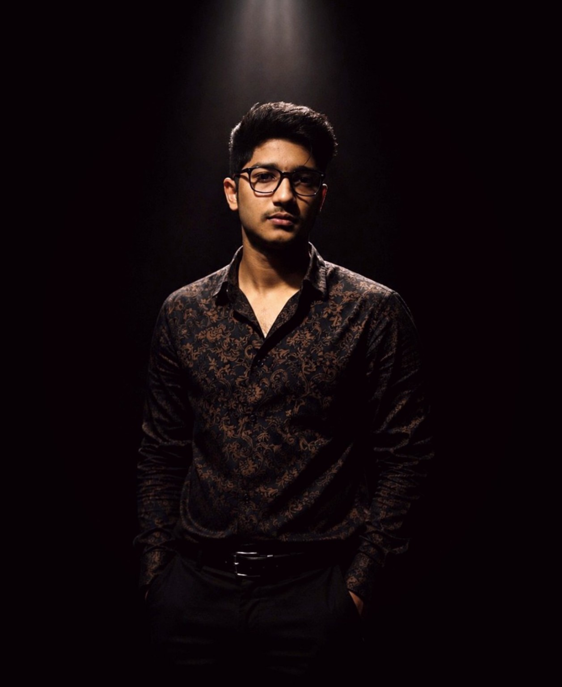

EXPLORE ME
A little more about what I do.

DEVELOPER
Building digital experiences with code.
I work with HTML, CSS, JavaScript and Python to create clean, practical and modern digital experiences. I enjoy turning ideas into useful websites and continuously improving the way people interact with technology.
MARKETER
Turning ideas into growth.
I have been working in the marketing world for two years, helping companies and businesses move forward through practical strategies, strong positioning and focused digital growth.
CEO
Leading projects with purpose.
I take responsibility for the direction and growth of several companies and projects, bringing together product thinking, marketing and execution.
FOUNDER
Creating brands from the ground up.
I am the founder of ventures including Clothnify and Nexzora, with a focus on building useful brands and digital businesses.